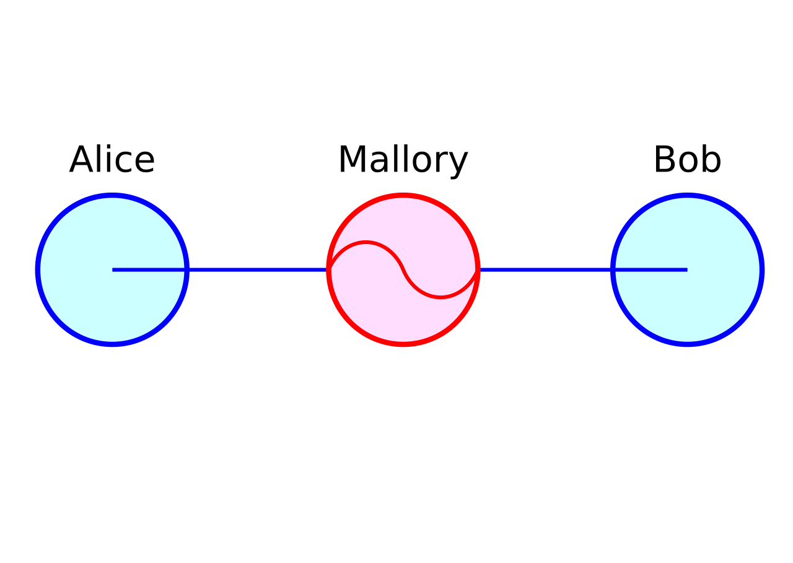
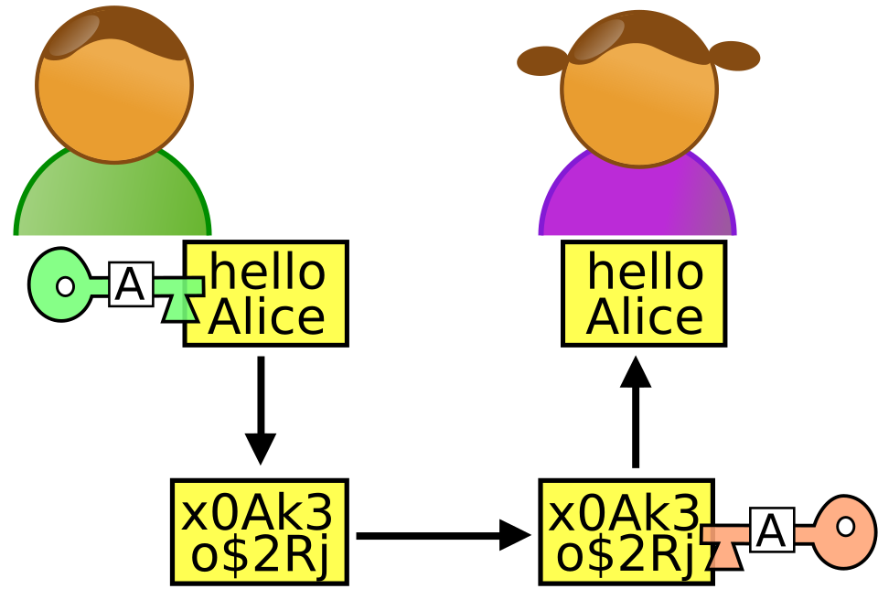

Attaque de l'homme du milieu / Man in the Middle (MitM)
Description technique
Une attaque de l'homme du milieu (MitM) se produit lorsqu'un pirate s'interpose entre deux personnes qui communiquent, sans qu'elles s'en aperçoivent. Il peut alors intercepter les messages et parfois les lire ou les modifier. Même si l'échange est chiffré, le risque demeure si les interlocuteurs ne vérifient pas l'identité associée aux clés publiques ou aux certificats : le pirate peut remplacer une clé par la sienne et se faire passer pour l'autre personne.
Image Explicative

Schéma de l'attaque de l'homme du milieu : Mallory intercepte les communications entre Alice et Bob.
Exemple : Échange normal puis attaque
Cela ne m'est jamais arrivé donc je vais simplement vous expliquer le concept.
Lors d'un échange classique, Alice chiffre son message avec la clé publique de Bob. Seul Bob peut le déchiffrer avec sa clé privée.

- Mallory remplace la clé publique de Bob par la sienne.
- Alice chiffre son message avec la clé de Mallory, qui peut alors le lire ou le modifier.
- Mallory rechiffre le message avec la clé de Bob et le lui transmet. Alice et Bob peuvent ne rien remarquer.